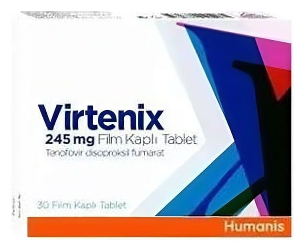

Virtenix 245 mg Film Kaplı Tablet ,30 Adet

Ne için kullanılır
KT · Bölüm 1VİRTENİX 245 mg film tablet; açık mavi renkli, badem şeklinde, bikonveks film kaplı tablettir. VİRTENİX 245 mg film tablet, 30 ve 90 tablet içeren ambalajlarda tedarik edilmektedir.
VİRTENİX 245 mg tablet, bir hepatit B virüsü (HBV) enfeksiyonu olan kronik hepatit B'yi tedavi etmek için de kullanılır. Tabletler: • yetişkinler, • 12 yaşından büyük 18 yaşından küçük adolesanlarda kullanım için uygundur
VİRTENİX 245 mg tablet, ayrıca İnsan İmmün Yetmezlik Virüsü (HIV) enfeksiyonuna yönelik bir tedavidir. Tabletler: • 18 yaşından büyük yetişkinler • direnç geliştirme nedeniyle artık tamamen etkili olmayan veya yan etkilere yol açan diğer HIV ilaçlarıyla daha önce tedavi edilmiş 12 yaşından büyük 18 yaşından küçük adolesanlarda kullanım için uygundur.
Hepatit B virüsü (HBV) açısından VİRTENİX'le tedavi edilmek için HIV enfeksiyonunuzun olması gerekmez.
VİRTENİX, etkin madde olarak tenofovir disoproksil fumarat içerir. Bu etkin madde, hepatit B virüsünü veya HIV ya da her ikisini tedavi etmek için kullanılan antiviral veya antiretroviral bir ilaçtır. Tenofovir, genellikle NRTI olarak bilinen bir nükleotid revers transkriptaz inhibitörüdür ve virüslerin kendilerini yeniden üretmesi için esas olan enzimlerin (hepatit B'de DNA polimeraz, HIV'de revers transkriptaz;) normal çalışmasını engelleyerek çalışır. HIV'de, VİRTENİX, HIV enfeksiyonunu tedavi etmek için her zaman diğer ilaçlarla kombine halde kullanılmalıdır.
Bu ilaç, HIV enfeksiyonunun çaresi değildir. VİRTENİX'i alırken, yine HIV enfeksiyonu ile ilişkili enfeksiyonlar veya başka hastalıklar geliştirebilir.
Ayrıca başkalarına da HIV veya HBV bulaştırabilirsiniz; dolayısıyla, başkalarını enfekte etmekten kaçınmak için önlemler alınması önemlidir.